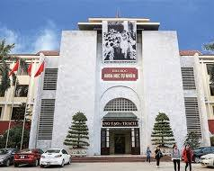
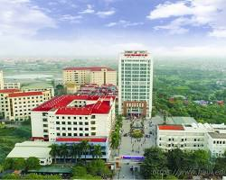
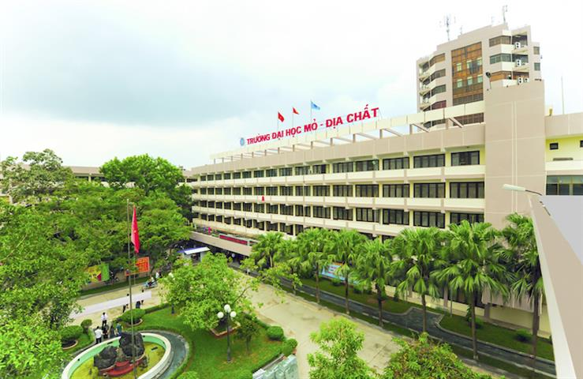

| Tên trường | Ưu điểm | Nhược điểm |
|---|---|---|
| Đại học Bách khoa Hà Nội | Trường đại học kỹ thuật hàng đầu Việt Nam, chương trình đào tạo chất lượng cao, cơ sở vật chất hiện đại | Điểm chuẩn cao, áp lực học tập lớn |
| Đại học Khoa học Tự nhiên, ĐHQGHN  | Môi trường học tập chuyên sâu, đội ngũ giảng viên chất lượng cao, nhiều chương trình trao đổi sinh viên | Chương trình học có tính lý thuyết cao |
| Đại học Công nghiệp Hà Nội  | Chương trình đào tạo sát với thực tiễn, cơ hội việc làm cao, mối quan hệ chặt chẽ với doanh nghiệp | Cơ sở vật chất có thể chưa được hiện đại bằng các trường đại học khác |
| Trường Đại học Mỏ - Địa chất  | Các chuyên ngành liên quan đến công nghệ xử lý khoáng sản, môi trường. | Phạm vi đào tạo có thể hẹp hơn |